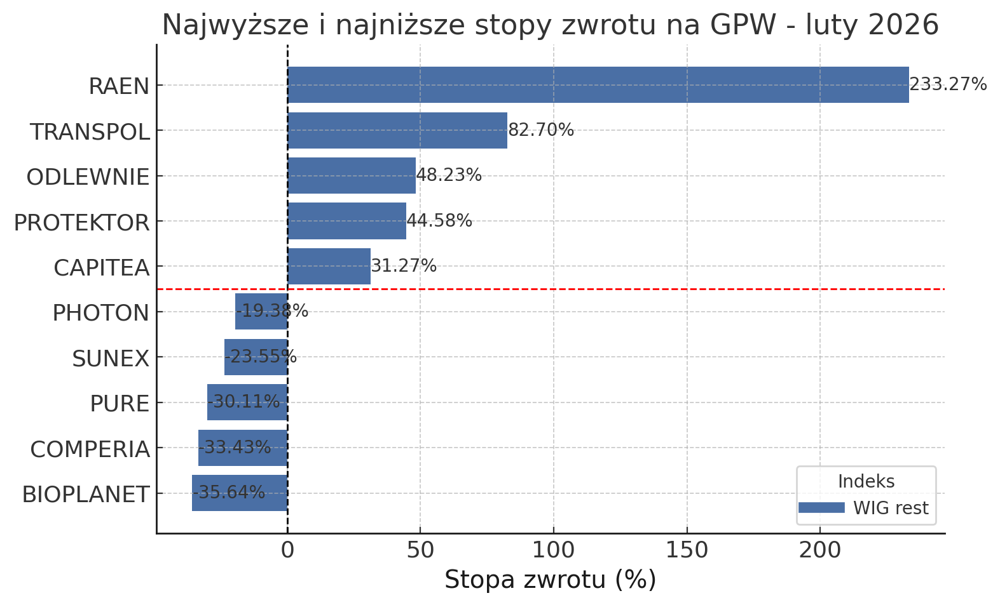
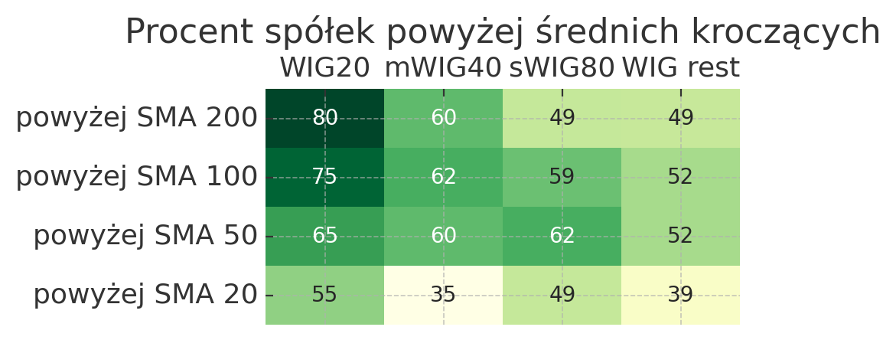
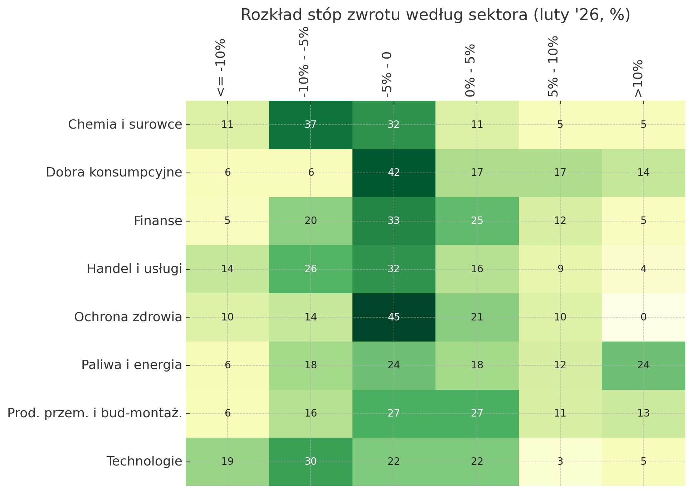
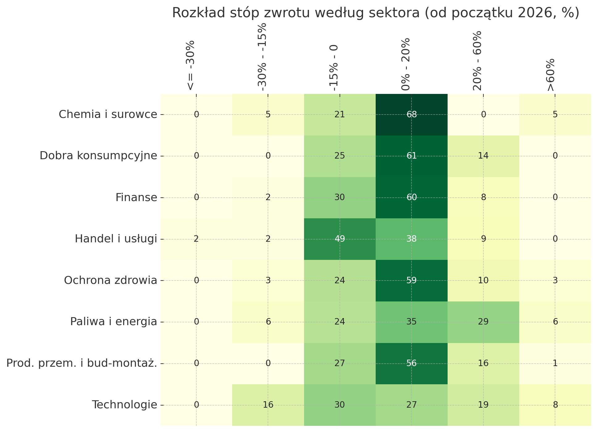
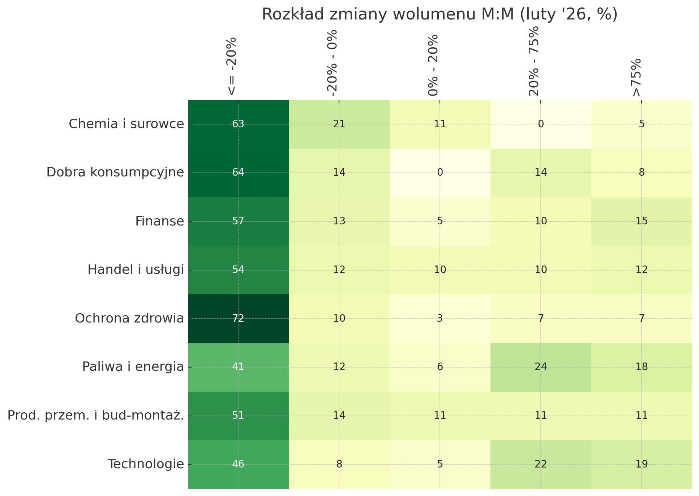
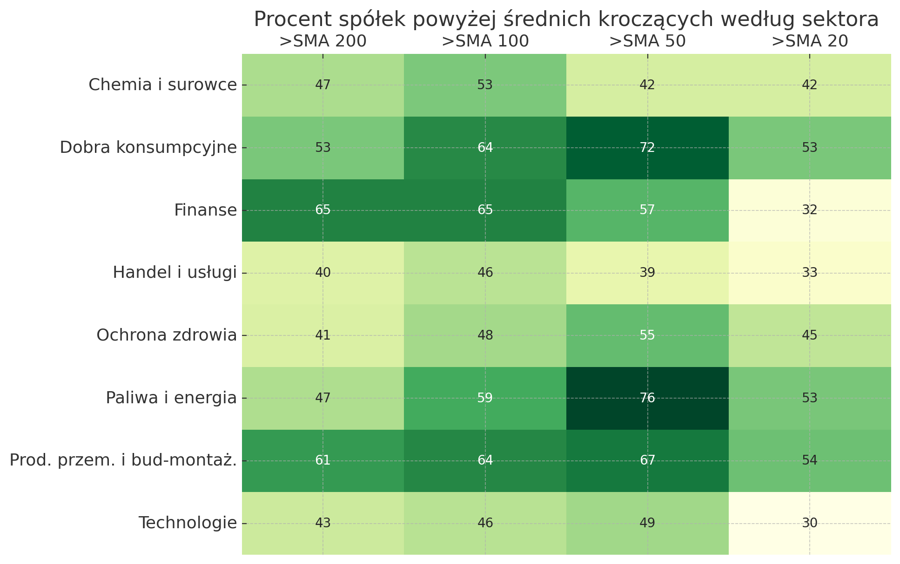

Początek roku obfitował kontynuacją trendu wzrostowego z poprzedniego roku, jednak końcówka stycznia charakteryzowała się wytraceniem tempa. W tym wpisie przyglądam sie wynikom osiągniętym przez spółki z GPW w lutym 2026 roku.
Stopy zwrotu i wolumen
| Indeks | WIG20 | mWIG40 | sWIG80 | WIG rest | Razem | ||||
|---|---|---|---|---|---|---|---|---|---|
| liczba | % | liczba | % | liczba | % | liczba | % | liczba | |
| Stopa zwrotu | |||||||||
| Duży spadek (<= 10%) | 0.0 | 0.0 | 4.0 | 10.0 | 7.0 | 8.75 | 19.0 | 10.26 | 30 |
| Spadek (-10% - -5%) | 4.0 | 20.0 | 10.0 | 25.0 | 11.0 | 13.75 | 40.0 | 21.60 | 65 |
| Lekki spadek (-5% - 0%) | 3.0 | 15.0 | 11.0 | 27.5 | 28.0 | 35.00 | 61.0 | 32.94 | 103 |
| Lekki wzrost (0% - 5%) | 5.0 | 25.0 | 8.0 | 20.0 | 24.0 | 30.00 | 31.0 | 16.74 | 68 |
| Wzrost (5% - 10%) | 5.0 | 25.0 | 3.0 | 7.5 | 8.0 | 10.00 | 17.0 | 9.18 | 33 |
| Duży wzrost (> 10%) | 3.0 | 15.0 | 4.0 | 10.0 | 2.0 | 2.50 | 17.0 | 9.18 | 26 |
| Razem | 20.0 | 100.0 | 40.0 | 100.0 | 80.0 | 100.00 | 185.0 | 99.90 | 325 |
| Indeks | WIG20 | mWIG40 | sWIG80 | WIG rest | Razem | ||||
|---|---|---|---|---|---|---|---|---|---|
| liczba | % | liczba | % | liczba | % | liczba | % | liczba | |
| Stopa zwrotu | |||||||||
| Bardzo duży spadek (<= 30%) | 0.0 | 0.0 | 0.0 | 0.0 | 0.0 | 0.00 | 1.0 | 0.54 | 1 |
| Duży spadek (-30% - -15%) | 0.0 | 0.0 | 1.0 | 2.5 | 3.0 | 3.75 | 7.0 | 3.78 | 11 |
| Spadek (-15% - 0%) | 8.0 | 40.0 | 11.0 | 27.5 | 22.0 | 27.50 | 59.0 | 31.86 | 100 |
| Neutralnie / lekki wzrost (0% - 20%) | 9.0 | 45.0 | 21.0 | 52.5 | 49.0 | 61.25 | 86.0 | 46.44 | 165 |
| Duży wzrost (20% - 60%) | 3.0 | 15.0 | 7.0 | 17.5 | 5.0 | 6.25 | 26.0 | 14.04 | 41 |
| Ekstremalny wzrost (> 60%) | 0.0 | 0.0 | 0.0 | 0.0 | 1.0 | 1.25 | 6.0 | 3.24 | 7 |
| Razem | 20.0 | 100.0 | 40.0 | 100.0 | 80.0 | 100.00 | 185.0 | 99.90 | 325 |
| Indeks | WIG20 | mWIG40 | sWIG80 | WIG rest | Razem | ||||
|---|---|---|---|---|---|---|---|---|---|
| liczba | % | liczba | % | liczba | % | liczba | % | liczba | |
| Zmiana % wolumenu M:M | |||||||||
| Znaczny spadek (<= -20%) | 4.0 | 20.0 | 18.0 | 45.0 | 51.0 | 63.75 | 108.0 | 58.32 | 181 |
| Umiarkowany spadek (-20% - 0%) | 8.0 | 40.0 | 8.0 | 20.0 | 12.0 | 15.00 | 14.0 | 7.56 | 42 |
| Umiarkowany wzrost (0% - 20%) | 4.0 | 20.0 | 7.0 | 17.5 | 4.0 | 5.00 | 8.0 | 4.32 | 23 |
| Znaczny wzrost (20% - 75%) | 4.0 | 20.0 | 3.0 | 7.5 | 7.0 | 8.75 | 25.0 | 13.50 | 39 |
| Ekstremalny wzrost (> 75%) | 0.0 | 0.0 | 4.0 | 10.0 | 6.0 | 7.50 | 30.0 | 16.20 | 40 |
| Razem | 20.0 | 100.0 | 40.0 | 100.0 | 80.0 | 100.00 | 185.0 | 99.90 | 325 |
Luty aż 198 spółek z indeksu WIG zakończyło pod kreską, z czego 30 odnotowało spadek o 10% lub więcej. Najsłabiej wypadły w tej kategorii spółki WIG spoza trzech głównych indeksów (oznaczane w analizie jako WIG rest) - 64,80% tych podmiotów zaliczyło w lutym spadek. Po drugiej stronie rozkładu znajduje się 26 spółek, które urosły o 10% lub więcej. W minionym miesiącu obronną ręką zdecydowanie wyszedł WIG20 z 35% walorów spadających i 65% rosnących. W porównaniu do stycznia metryka MTD wygląda dużo słabiej w zasadzie w każdej materii - przykładowo o co najmniej 10% rosło nie 26 a 98 spółek z indeksu WIG.
W perspektywie YTD obsunięcie nastąpiło w przypadku kategorii neutralnego wzrostu (do 20%), część spółek przesunęła się poniżej kreski, a część za pierwsze dwa miesiące może pochwalić się większym wzrostem. Podmiotów ze stopą zwrotu od początku roku powyżej 20% na moment zamykania lutego było 48 (vs 38 w styczniu).
Najlepsze i najgorsze spółki i sesje
| Nazwa | Zmiana % | Wol do Wol SMA10 | Sektor | Indeks | |
|---|---|---|---|---|---|
| Data | |||||
| 2026-02-19 | PROTEKTOR | 32.2115 | 506.61 | Dobra konsumpcyjne | WIG rest |
| 2026-02-23 | ODLEWNIE | 32.1033 | 390.78 | Chemia i surowce | WIG rest |
| 2026-02-18 | CAPITEA | 31.7784 | 635.26 | Finanse | WIG rest |
| 2026-02-25 | RAEN | 29.2308 | 109.19 | Paliwa i energia | WIG rest |
| 2026-02-06 | RAEN | 27.1676 | 577.32 | Paliwa i energia | WIG rest |
| 2026-02-27 | NEXITY | 26.7327 | 619.62 | Prod. przem. i bud-montaż. | WIG rest |
| 2026-02-17 | RAEN | 26.7231 | 306.76 | Paliwa i energia | WIG rest |
| 2026-02-11 | ECBSA | 21.6931 | 332.61 | Paliwa i energia | WIG rest |
| 2026-02-02 | MEXPOLSKA | 21.3483 | 367.71 | Handel i usługi | WIG rest |
| 2026-02-23 | PROTEKTOR | 20.2381 | 245.64 | Dobra konsumpcyjne | WIG rest |
| Nazwa | Zmiana % | Wol do Wol SMA10 | Sektor | Indeks | |
|---|---|---|---|---|---|
| Data | |||||
| 2026-02-02 | COMPERIA | -17.1429 | 767.07 | Handel i usługi | WIG rest |
| 2026-02-03 | JSW | -16.7692 | 115.96 | Chemia i surowce | mWIG40 |
| 2026-02-03 | BIOPLANET | -16.0819 | 243.80 | Handel i usługi | WIG rest |
| 2026-02-04 | MEXPOLSKA | -14.9306 | 93.40 | Handel i usługi | WIG rest |
| 2026-02-17 | PURE | -13.7705 | 224.92 | Ochrona zdrowia | WIG rest |
| 2026-02-02 | MOLECURE | -13.7690 | 116.84 | Ochrona zdrowia | WIG rest |
| 2026-02-05 | MEXPOLSKA | -13.2653 | 118.16 | Handel i usługi | WIG rest |
| 2026-02-05 | BUMECH | -12.8329 | 59.59 | Prod. przem. i bud-montaż. | sWIG80 |
| 2026-02-04 | ASSECOPOL | -12.7640 | 156.79 | Technologie | mWIG40 |
| 2026-02-26 | PHOTON | -12.3457 | 287.44 | Paliwa i energia | WIG rest |
| Nazwa | Zmiana % | Średni wolumen M:M | Sektor | Indeks | |
|---|---|---|---|---|---|
| Data | |||||
| 2026-02-01 | RAEN | 233.2655 | 1340.587 | Paliwa i energia | WIG rest |
| 2026-02-01 | TRANSPOL | 82.7027 | 898.238 | Prod. przem. i bud-montaż. | WIG rest |
| 2026-02-01 | ODLEWNIE | 48.2269 | 239.968 | Chemia i surowce | WIG rest |
| 2026-02-01 | PROTEKTOR | 44.5783 | 155.676 | Dobra konsumpcyjne | WIG rest |
| 2026-02-01 | CAPITEA | 31.2698 | 165.467 | Finanse | WIG rest |
| 2026-02-01 | HELIO | 27.9487 | 34.877 | Dobra konsumpcyjne | WIG rest |
| 2026-02-01 | WASKO | 27.0195 | -46.060 | Technologie | WIG rest |
| 2026-02-01 | ZREMB | 22.8188 | 78.145 | Prod. przem. i bud-montaż. | WIG rest |
| 2026-02-01 | ORANGEPL | 22.1884 | 61.168 | Technologie | WIG20 |
| 2026-02-01 | FEERUM | 20.2335 | 87.228 | Prod. przem. i bud-montaż. | WIG rest |
| Nazwa | Zmiana % | Średni wolumen M:M | Sektor | Indeks | |
|---|---|---|---|---|---|
| Data | |||||
| 2026-02-01 | BIOPLANET | -35.6383 | -17.718 | Handel i usługi | WIG rest |
| 2026-02-01 | COMPERIA | -33.4286 | 38.375 | Handel i usługi | WIG rest |
| 2026-02-01 | PURE | -30.1075 | -21.717 | Ochrona zdrowia | WIG rest |
| 2026-02-01 | SUNEX | -23.5537 | 185.638 | Prod. przem. i bud-montaż. | WIG rest |
| 2026-02-01 | PHOTON | -19.3820 | 73.701 | Paliwa i energia | WIG rest |
| 2026-02-01 | ASSECOPOL | -18.6057 | 263.105 | Technologie | mWIG40 |
| 2026-02-01 | VERCOM | -18.1149 | 120.525 | Technologie | mWIG40 |
| 2026-02-01 | SHOPER | -17.3077 | 126.038 | Technologie | sWIG80 |
| 2026-02-01 | CELTIC | -16.7391 | -30.152 | Finanse | WIG rest |
| 2026-02-01 | GENOMTEC | -16.7279 | -57.498 | Ochrona zdrowia | WIG rest |
W kategorii wzrostów sesyjnych, lutowe odczyty nie osiągały pułapów widocznych w styczniu. Największą zmianę in plus odnotował Protektor 19 lutego (w rankingu top10 pojawił sie jeszcze na 10 miejscu). W największych wzrostach trzykrotnie pojawia się Raen (Grupa Virtus) jako efekt pozytywnie przyjętego przebranżowienie się spółki z fotowoltaiki na usługi finansowe dla przemysłu zbrojeniowego. Dzięki fundamentalnej informacji o dużym kontrakcie dla Polskiej Grupy Zbrojeniowej, w lutym swój sukces miała spółka Odlewnie - 23 lutego kurs wystrzelił o ponad 32%.
Jeśli chodzi o spadki, to największe obsunięcie wyniosło -17,14% w przypadku Comperii 2 lutego, jednak ta anomalia nie ma swojego odzwierciedlenia w danych fundamentalnych.
Wspomniane wzrosty spółki Raen w pojedynczych sesjach swoje odzwierciedlenie ma w danych miesięcznych. Spółka jest liderem indeksu WIG ze wzrostem w lutym na poziomie 233%. Dla porównania drugi w rankingu, Transpol, wzrósł “zaledwie” o 82,7%.
W przypadku największych spadków, na pierwszym miejscu znalazła się spółka Bioplanet z wynikiem -35,64%. Spółka została przeceniona jako korekta po wzrostowych ostatnich miesącach i dużym peaku w styczniu. Zdaje się jednak, że Bioplanet ma apetyt na zdecydowanie więcej, poniewaz już 3 marca zaraportował mocne wyniki za luty, wzrost sprzedaży o 10% rok do roku. W kwestiach spadkowych w lutym sporo działo się także na spółkach technologicznych. Podążając za globalnym trendem poszukiwania potencjalnych ofiar rozwoju sztucznej inteligencji, spadkowe miesiące zaliczyły m.in. Assecopol, Vercom czy Shoper.
Wskaźniki techniczne

| Indeks | WIG20 | mWIG40 | sWIG80 | WIG rest |
|---|---|---|---|---|
| Odległość % od ATH200 | ||||
| 75-100% | 0.0 | 0.0 | 0.00 | 0.54 |
| 50-75% | 5.0 | 0.0 | 0.00 | 3.80 |
| 50-25% | 10.0 | 25.0 | 20.25 | 23.37 |
| 25-15% | 5.0 | 20.0 | 20.25 | 22.83 |
| 15-5% | 40.0 | 22.5 | 37.97 | 31.52 |
| 5-0% | 40.0 | 32.5 | 21.52 | 17.93 |
| Indeks | WIG20 | mWIG40 | sWIG80 | WIG rest |
|---|---|---|---|---|
| supertrend | ||||
| lowerband | 50.0 | 55.0 | 56.25 | 51.35 |
| upperband | 50.0 | 45.0 | 43.75 | 48.65 |
*wartości jako % spółek w danym indeksie będącym na zakończenie badanego okresa w trendzie wzrostowym (lowerband) lub spadkowym (upperband)
W kwestii wskaźników technicznych, matryca średnich kroczących potwierdza, że dynamiczne wzrosty co najmniej chwilowo są za nami. W przypadku każdego z zaprezentowanych indeksów, najgorzej wypada SMA20, co oznacza, że w ostatnich sesjach wyniki wyraźnie pogorszyły się względem sesji z grudnia czy stycznia. Wyraźnie odznacza się tu WIG20, w przypadku którego aż 80% spółek na koniec lutego znajdowało się powyżej SMA200, a w przypadku SMA20 już tylko 55%. Ostatni okres był jednak najtrudniejszy dla mWIG40 - krótkoterminowo tylko 35% spółek jest powyżej średniej (dla porównania na zamknięciu stycznia było to 65%).
Choć widać, że z rynku wyparowało sporo entuzjazmu, to należy zaznaczyć, że sytuacja nie wygląda alarmująco. Podobnie jak w styczniu, względnie niewielka część spółek jest poniżej 50% od 200-sesyjnego ATH. Co jednak oczywiste obserwując już samą strukturę SMA, nastąpiła erozja liczby spółek będących najbliższej lokalnego szczytu do dwóch niższych grup: 5-15% i 15-25% od ATH 200.
Perspektywa sektorowa




Luty dla spółek większości sektora zakończył się na delikatnym minusie. Nieco mocniej w stronę czerwoności skręciły spółki z sektora chemia i surowce (efekt bardzo silnego stycznia) oraz technologie (wspomniane już wcześniej ryzyka związane z rozwojem AI). In plus wyróżnia sie sektor Paliwowo-energetyczny, z którego aż 24% spółek zamknęło miesiąc wzrostem 10%, lub większym. Jest to efekt przede wszystkim pozytywnych nastrojów w energetyce (wówczas) napędzanych przez możliwe zmiany w systemie uprawnień do emisji CO2. W przypadku perspektywy YTD, w przypadku prawie każdego segmentu główna grupą są spółki rosnące o nie więcej niż 20%, co oczywiście jest w dużej mierze zasługa mocnego stycznia. Dwa sektory wyłamujące się poza ten trend to Handel i usługi, z których aż 49% spada o nie więcej niż 15% oraz Technologie, które przede wszystkim balansują pomiędzy ujemną a dodatnią stopą zwrotu.
Luty był również miesiącem obniżonego wolumenu. W skrajnych przypadkach jak np. Ochrona zdrowia, aż 72% spadało na średnim sesyjnym wolumenie o ponad 20%. Ewentualne drgnięcia moga być dostrzegalne w przypadku sektorów Paliwa i energia oraz Technologie, jednak w przypadku tych drugich, wzmożony ruch nie do końca ma pozytywny wydźwięk.
W kwestii średnich kroczących, podział branżowy również nie przynosi nam informacji o ponadprzeciętnie wybijającym się trendzie wzrostowym. Widać wyraźie, że to w przypadku średnich średnioterminowych (50/100 sesji) istnieje większy procent spółek z kursem powyżej, choć jeszcze na zamknięcie stycznia bardzo mocno wyglądały Chemia i surowce (68% powyżej SMA20, dziś 42), Finanse (62% powyżej SMA20, dziś 32) oraz Technologie (62% powyżej SMA20, dziś 30).
Na zakończenie
Końcówka stycznia wskazywała powolne wygasanie mocno wzrostowego trendu i przypuszczenia te potwierdziły się w lutym. Wśród głównych indeksów słabość widoczna jest przede wszystkim w mWIG40, zaś w perspektywie sektorowej z największymi kłopotami borykają się spółki finansowe i technologiczne. W indeksie WIG wciąż można było znaleźć stopy zwrotu na poziomie dziesiątek procent, jednak w przypadku marca trudno pokusić się o konkretne typy.